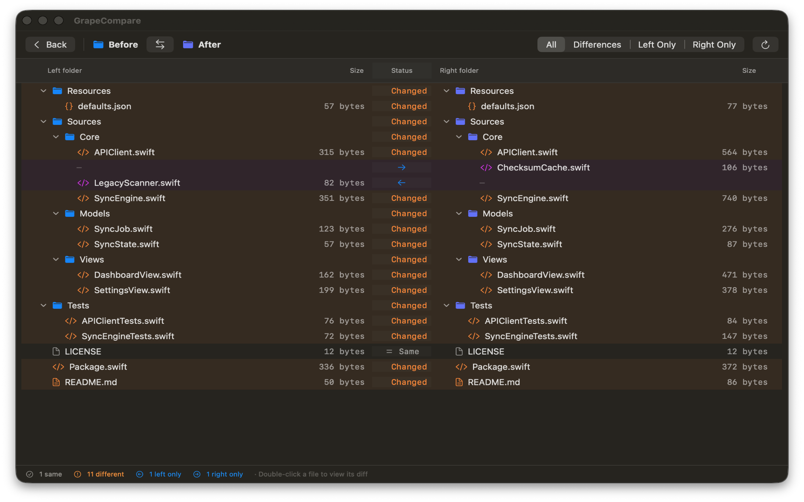
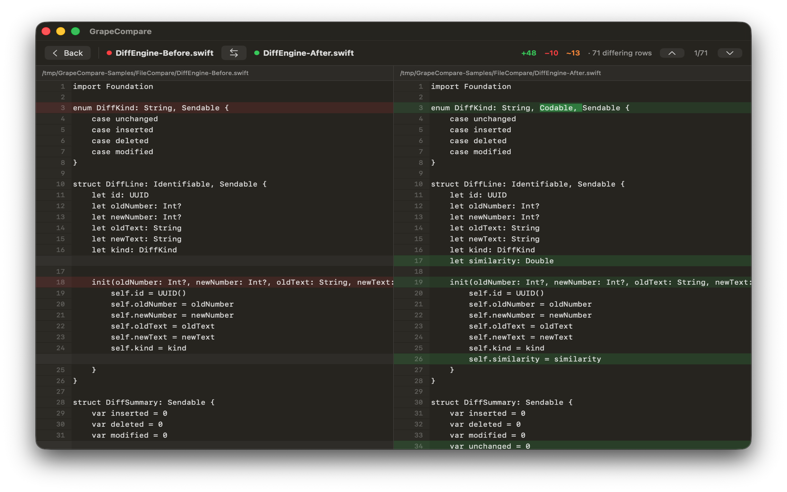

Files and folders
Side-by-side line and character diff, recursive directory trees, filters, search, patch export, and reviewed copy, replace, move, recoverable delete, and undo.
A professional, sandboxed macOS workbench for files, folders, images, and merges. Precise results, private by design, without an account or subscription.
Requires macOS 15 or later, on Apple silicon or Intel. Install from the Mac App Store, the supported distribution channel. GitHub provides source code; Homebrew and historical GitHub release downloads are not supported installers for the current app.
To start a comparison, choose two files or folders in the app. You can also use Finder Open With, drag and drop, or the Compare Files Shortcut. The app can access only items you select.
Three-way text and image merging uses manually selected base, left, and right inputs. Git integration, difftool/mergetool hooks, and a standalone CLI are not included.

Built for developers who need trustworthy results across everyday files and folders.
Side-by-side line and character diff, recursive directory trees, filters, search, patch export, and reviewed copy, replace, move, recoverable delete, and undo.
Resolve user-selected text and image conflicts with explicit choices, editable output, navigation, and validation.
Two-Up, Split, Blink, Difference, synchronized zoom, metadata, pixel sampling, thresholds, channels, and local alignment.
Semantic JSON, plist, XCStrings, and Xcode project comparison, plus bundle, signature, entitlement, Mach-O, and asset inspection.
Only user-selected files and folders are accessible, with persistent access stored as security-scoped bookmarks.

Release benchmarks are reproducible and checked into the repository for local verification. GrapeCompare has also been verified against two extracted LLVM source trees containing roughly 170,000 leaves and 2.3 GiB each.
Read the LLVM benchmark →Comparison runs locally. GrapeCompare has no account, analytics, advertising, tracking, subscription, or cloud upload.
Free, open source, native to macOS.